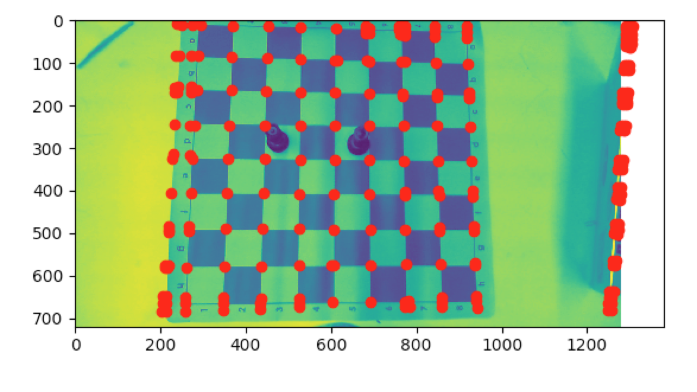
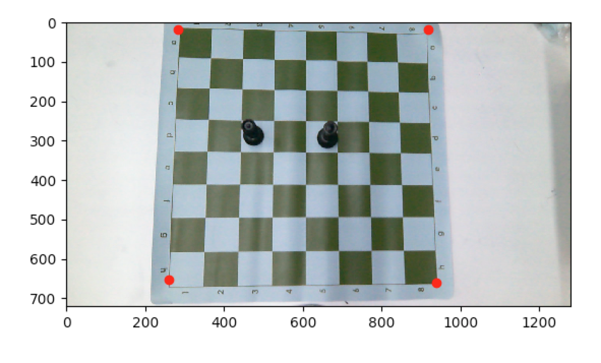

PyPawn: using transfer learning to identify chess pieces to create a digital board.
What is it?
For my final project in CSCI1430 (Computer Vision), my team consisting of Tim Chang, Tucker Ped and myself completed PyPawn (then called
PawnCena).
Our goal was to create a system that could
track the moves of a chess match and render a digital version
of the board each time a move was made. If you'd like to train our machine learning model for yourself, I've
attached the Jupyter
notebook I used for that!
The data you need can be found here in the github
repository.
To do this, we took
a live video feed of a chess game filmed overhead, located
the chess board in a frame from the video feed, located the
different pieces on the board, and used this information for a
digital rendering. The system did this repeatedly throughout
the game to record the moves the players made and refreshed
the digital version of the board throughout the game. We built it with the intention to provide players with an
automatic way of recording their games for
later analysis. We thought it'd be especially helpful for large tournaments as there currently does not exist a way
to record games automatically.
Board Recognition:
The first step to producing a digital version of a chess
board was finding the board in an input image. We do this by
finding the corners of the playing area of the board before
game play begins, then each time we want to check the game
state we take a frame from the video feed and do a four
point transform on the corners to a cropped image of just the
playing area. We then divide this image of the playing area
into images of the individual squares on the board and send
these images to the CNN.
To find the corners of the board we took a line-based
approach. We first run an image from the video feed through
a Canny edge detector. The edge image is then sent through
a Hough line detector to get the grid lines of the chess board.
At this point, there may be objects or textures in the background
of the original image that cause the detection of
unnecessary lines. To combat this, we filtered our lines into
horizontal and vertical lines. Next, we found the intersection
points of the horizontal and vertical lines and run agglomerative clustering on those intersections. This gave
us the grid points of the chess board. We then filtered through
these points to find the corners of the playing area by finding
the center and grid size of the board and finding the closest
points in our collection of intersection points to where the
four corners should be located.

The highlighted corners as detected

The four corners of the chessboard as
recognized by our algorithm
Piece Recognition:
We used a large data set of about 10,000 photos of each
piece and empty squares to train our model curated by
Daylen Yan. Each image was of 227 by 227 pixels and
were not reshaped during training. For the purposes of obtaining the accuracy needed for the model to be successful,
we explored the idea of transfer learning. As in the introduction, you can try out the model for yourself.
In training the model, we extracted deep features from
the next to last layer of the loaded Inception-v3. These deep
features were then used as out feature vectors for each image
and saved as they were passed through. The last layer is
not used as it represents and corresponds to the ImageNet classification task for which it was built for, and the
outputted
categories are not useful to us for this task.
The exact layer that was used is called bottleneck pool 3.
Finally, the training regimen consistently outputted 98.8 -
99.1 percent accuracy after the deep features were used to
train a canned Linear Classifier in Tensorflow. Finally, our
model is saved and can be loaded and used.
Finally, some back end magic happens and the surrounding application is implemented in Python with nothing out of
the oridnary.
It is implemented as follows: We used a webcam
which we read from and fed into the board recognition, then used the geometries calculated there to split
the board into individual squares with pieces, and pass
the pieces on to the neural net. Once the neural net had
performed classification, we took the classified pieces and
converted them to an internal representation of a chessboard. Then, using a chess API and TKinter, render
them to the screen in a window along with other features such as new/save game, which would reset or save
the recorded moves, and a scrollable move list, which
kept track of each board position that was calculated.